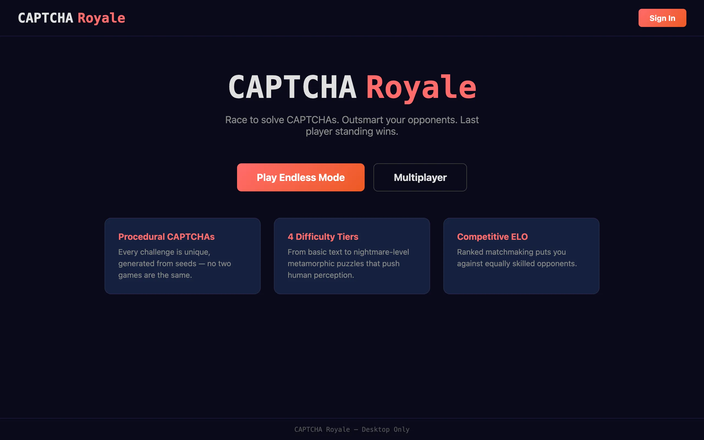

The premise is simple: up to 16 players enter a room, CAPTCHAs appear on screen, and if you answer wrong or run out of time, you're eliminated. Last player standing wins. The idea came from noticing that CAPTCHAs are one of the few interactions where humans routinely fail at a task designed to be easy for humans. That failure rate felt like it could be the basis for a competitive game, not just a gate on a login form.

{kind=link}
CAPTCHAs have an interesting history. The concept traces back to work by Luis von Ahn and others at Carnegie Mellon, who formalized the idea of a reverse Turing test where the judge is a machine rather than a human. Traditional CAPTCHAs present distorted text, noisy images, or perceptual puzzles that are trivial for biological vision systems but difficult for automated ones. The irony is that modern machine learning has largely closed that gap, which is why services like reCAPTCHA have moved to behavioral analysis instead. In Captcha Royale, the CAPTCHAs don't need to stop bots. They just need to be hard enough to make humans sweat.
Deterministic CAPTCHA generation
The CAPTCHA engine is written in Rust and compiled to WebAssembly. Both the client and the server run the same WASM module. When a round starts, the server sends a seed and a set of difficulty parameters. The client's WASM module uses those inputs to generate the CAPTCHA locally, and the server's copy generates the same CAPTCHA independently to validate the answer. Because the generation is deterministic (seeded with HMAC-SHA256 and driven by ChaCha8), both sides produce identical output without ever transmitting the CAPTCHA image or solution over the network.
This architecture eliminates an entire class of cheating. There's no image to intercept and feed to an OCR service, because the image is rendered locally from a seed. There's no solution in the network traffic, because the solution is computed server-side from the same seed. The only way to solve the CAPTCHA is to look at it and type the answer.

{kind=link}
CAPTCHA types
There are over 45 CAPTCHA types across four difficulty tiers. Tier 1 covers the fundamentals: distorted text (warped characters with bezier noise and overlapping strokes), simple math (arithmetic with visual disruption and decoy digits), image grids (select all cells containing a target shape), dot counting, clock reading, fraction comparison, and graph reading. These are always available and form the baseline.
Tier 2 unlocks at round 4 and introduces perceptual challenges: rotated objects (find the correctly oriented item among rotated variants), color perception (Ishihara-inspired grids where you identify a differently shaded tile), sequence completion, mirror matching, balance scales, word unscrambling, gradient ordering, overlap counting, rotation prediction, and partial occlusion. Tier 3 opens at round 7 with cognitive tasks like spatial reasoning, multi-step verification, boolean logic, path tracing, and adversarial images. Tier 4 is the nightmare tier: metamorphic CAPTCHAs, combined modality puzzles, adversarial typography, procedural novel types, time pressure cascades, and jigsaw fitting.
Each generator has its own difficulty curve controlled by parameters like character count, warp intensity, noise density, time limit, and grid size. As rounds advance, these parameters tighten. A round-one text CAPTCHA might give you six characters with mild distortion and twelve seconds. A round-fifteen text CAPTCHA might give you nine characters with heavy warping, overlapping decoys, and five seconds.
Game modes
There are three modes. Endless is solo: CAPTCHAs keep coming until you fail, and your score is tracked locally. Battle Royale is the main multiplayer mode, supporting 4 to 16 players with single-elimination on wrong answers or timeouts. Sprint is a race format for 2 to 8 players where everyone solves the same 10 CAPTCHAs and the fastest total time wins, with no elimination.
Battle Royale was the original design and the other modes came from playtesting. Endless mode exists because people wanted to practice without the pressure of elimination. Sprint exists because some players found the battle royale format too punishing for a single mistake, and wanted a mode where consistency mattered more than perfection.
Multiplayer infrastructure
The backend runs on Cloudflare Workers with Durable Objects managing game state. Each match room is a Durable Object instance that owns the authoritative game loop: it generates seeds, tracks the timer, validates answers, and broadcasts eliminations. The matchmaker is a separate Durable Object that maintains the queue and pairs players by skill bracket.
Using Durable Objects for the match rooms turned out to be a good fit. Each room is a single-threaded actor with strongly consistent state, which means there are no race conditions around simultaneous answer submissions. When two players submit at the same instant, the Durable Object processes them sequentially. This matters in a game where milliseconds determine who gets eliminated.
Player data lives in Cloudflare D1, which is SQLite at the edge. Authentication is OAuth2 through Google, with Discord and GitHub connectors ready but not yet enabled. The frontend is a React SPA deployed to GitHub Pages, communicating with the Workers backend over WebSocket for real-time match data and REST for everything else.
ELO and matchmaking
Players start at 1000 ELO and are sorted into six brackets: Bronze (below 800), Silver (800 to 1000), Gold (1000 to 1200), Platinum (1200 to 1500), Diamond (1500 to 2000), and Master (above 2000). The matchmaker initially tries to fill a room from the player's own bracket. After 30 seconds it expands to adjacent brackets, and after 60 seconds it opens to two brackets in either direction.
The K-factor scales with experience: 40 for players with fewer than 30 matches, 24 for 30 to 100, and 16 beyond that. New players move quickly through the brackets until the system has enough data to place them accurately, then the swings dampen. In a battle royale with more than two players, the ELO adjustment is calculated pairwise against every other participant and averaged. This means a Bronze player who survives deep into a lobby full of Gold players will gain significantly more rating than one who merely beats other Bronze players.
The monorepo
The project is structured as a Turborepo monorepo with pnpm workspaces. The Rust CAPTCHA engine lives in packages/captcha-engine and compiles to a roughly 230KB WASM binary. The React frontend is in apps/web and the Cloudflare Worker is in apps/worker. The WASM module is a shared dependency: the frontend loads it in the browser for rendering, and the Worker loads it in the edge runtime for validation. Having a single source of truth for CAPTCHA generation, written in Rust, tested with cargo test, and deployed to two very different runtimes, is one of those cases where WebAssembly's portability promise actually delivers.